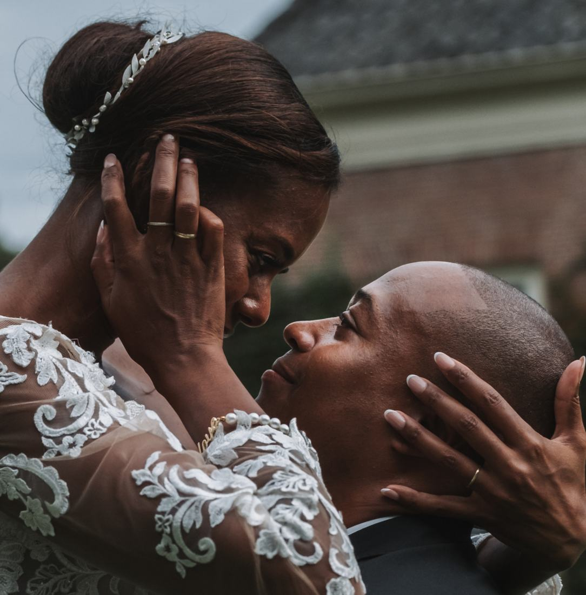
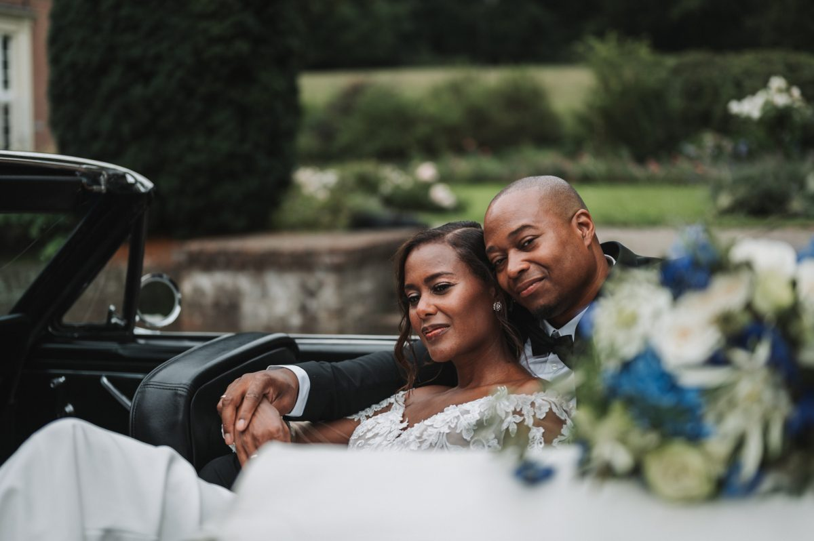
Jullie verhaal, puur en echt
Trouwfotograaf in documentaire stijl. Ik leg jullie dag vast zoals hij écht is: ongeposeerd en oprecht. Onopvallend tussen jullie gasten door, op zoek naar de pure, spontane momenten.
★★★★★
Carlo heeft schitterende foto’s gemaakt met een natuurlijk effect.Fleurtje, via Trustoo
Wat ik fotografeer
Vooral bruiloften, maar ook fine art portretten en reisreportages.
Uit mijn portfolio
Een greep uit de bruiloften en shoots van de afgelopen jaren. Klik op een reportage voor meer foto's.
Bekijk
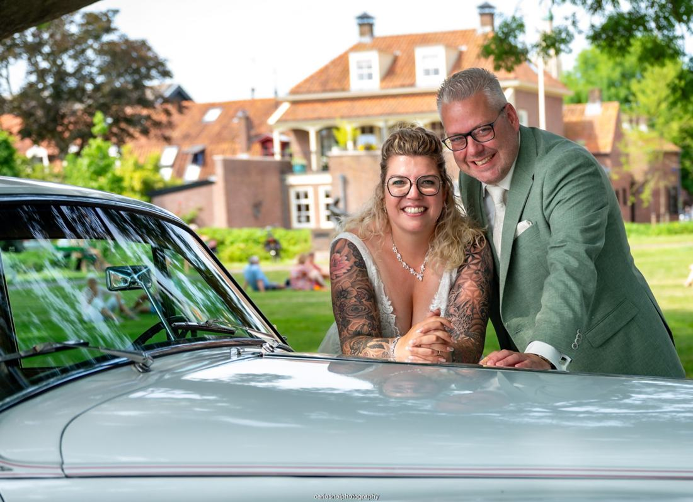
Rick & Ellen
Bruiloft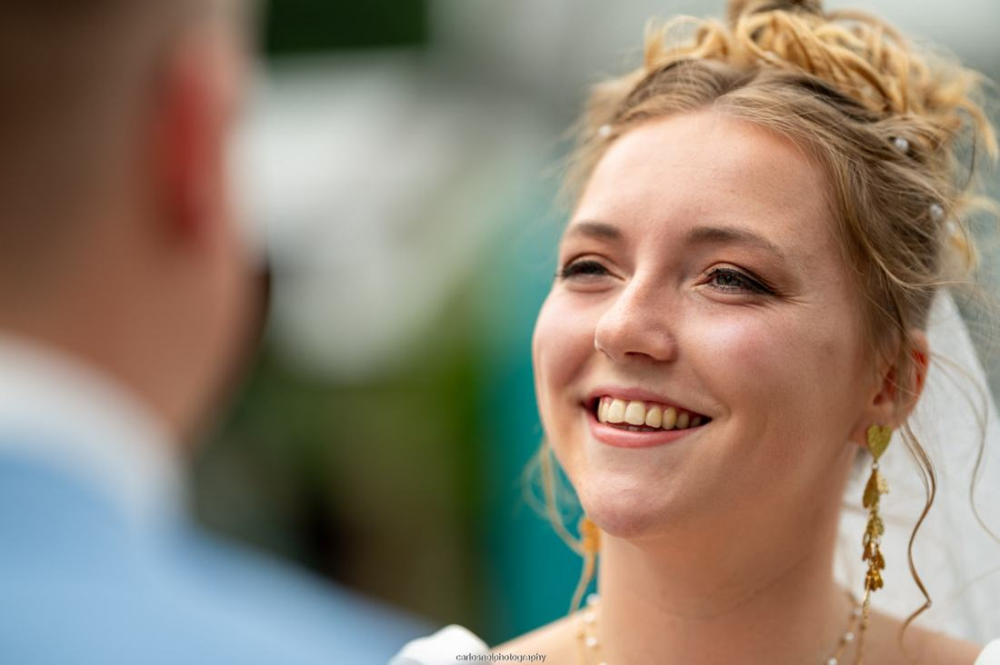
Thomas en Fleurtje
Bruiloft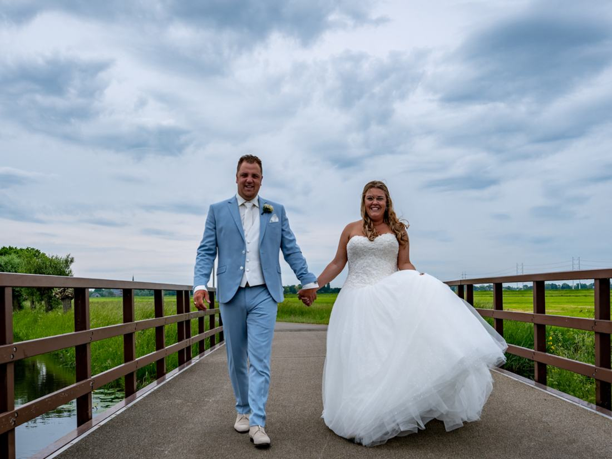
Steve en Steffanie
Bruiloft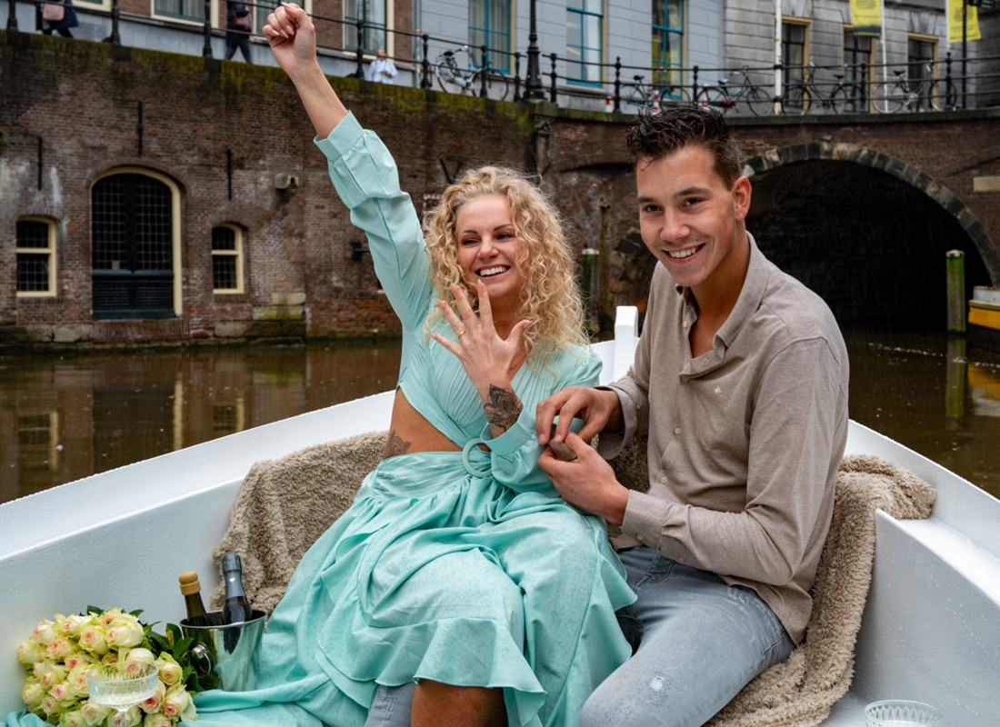
Verloving in de boot
Huwelijksaanzoek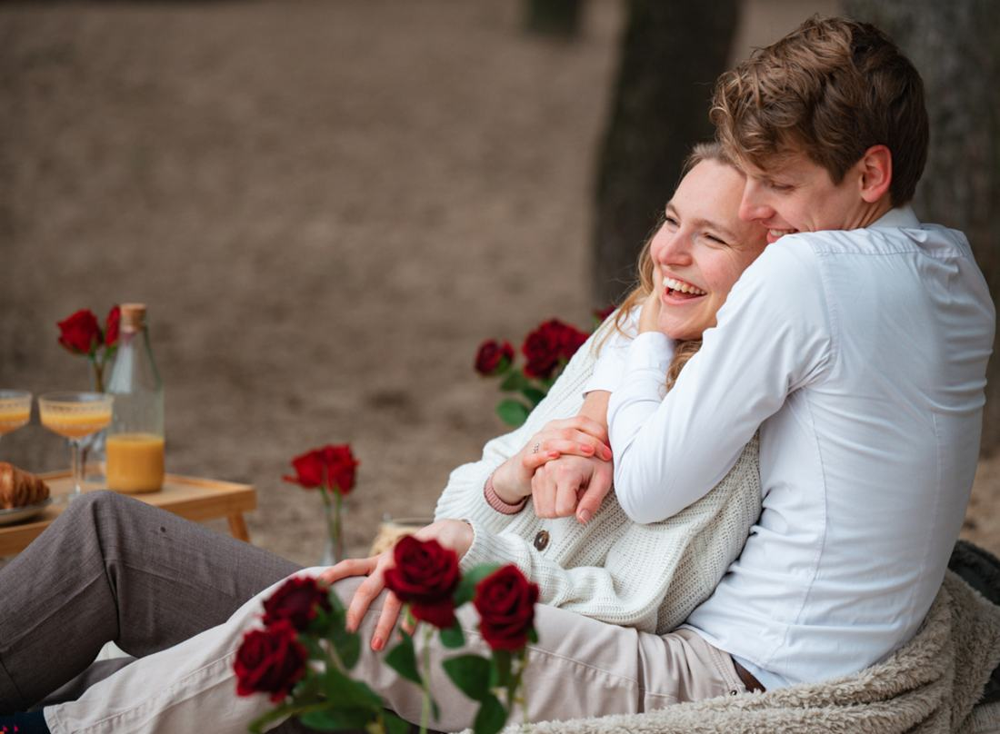
Picknick in het bos
Pre-weddingshootJullie trouwdag in drie momenten
Je trouwt immers maar één keer. Daarom kan ik meer vastleggen dan alleen de dag zelf.
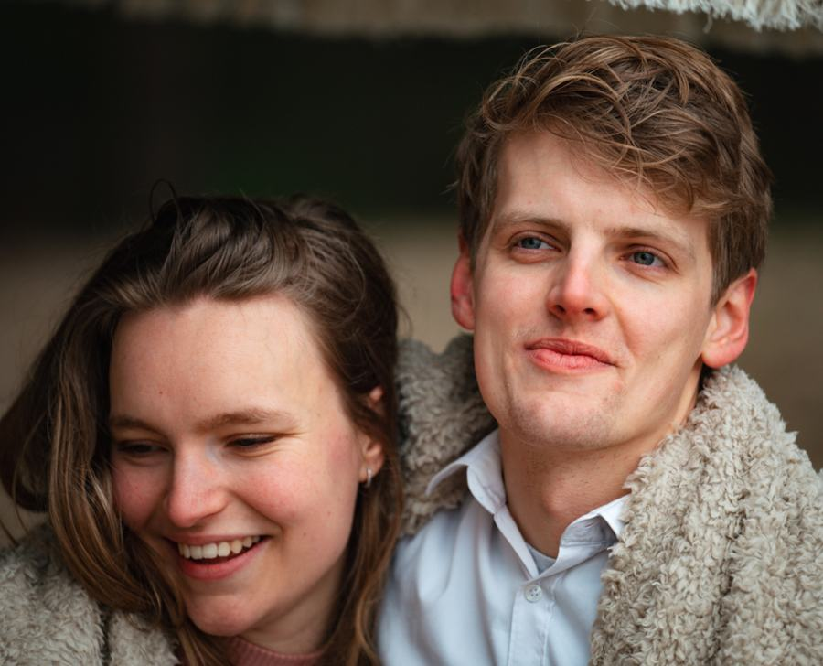
Loveshoot vóór de trouwdag
Een ontspannen shoot vooraf. Jullie wennen aan de camera, zodat je op de dag zelf helemaal kunt genieten van het feest en jullie gasten.
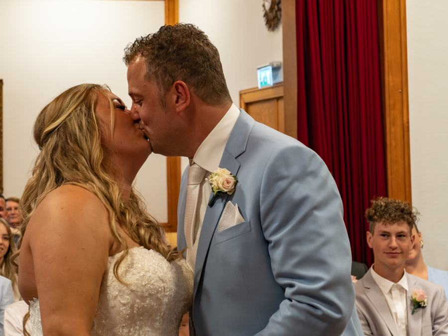
Trouwfotografie op de dag
Ik ben niet nadrukkelijk aanwezig, maar zie de mooiste momenten en leg ze vast. Ik weet wat er op een trouwdag kan gebeuren en waar ik moet zijn.
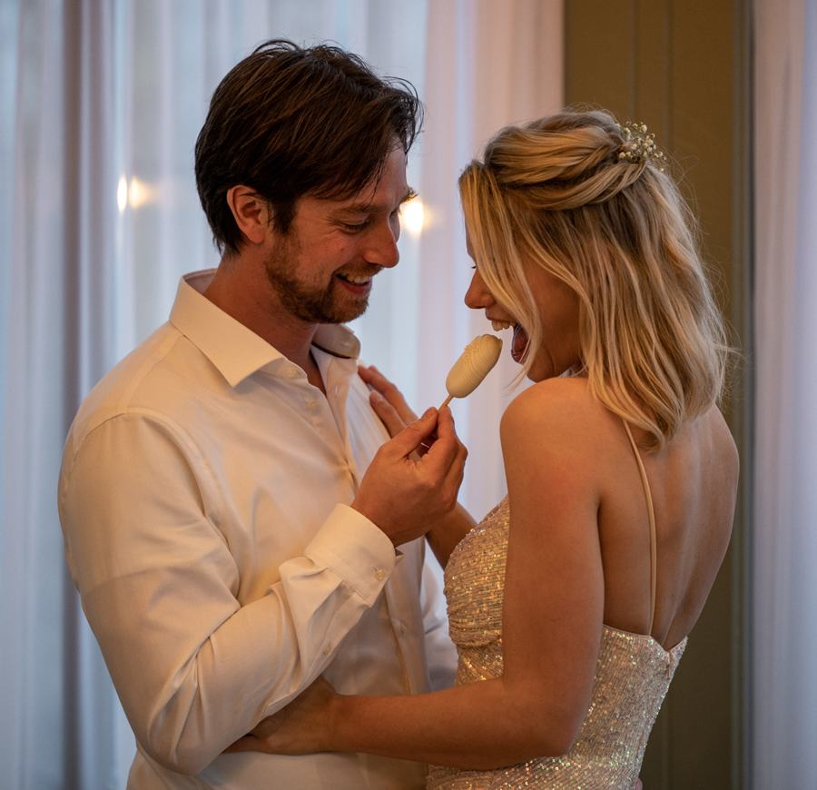
After wedding shoot
Na de bruiloft nemen we rustig de tijd, zonder de druk van de dag. Nog één keer die trouwjurk aan, of dat strakke pak.
Trouwpakketten
Trouwfotografie vanaf € 1.750, in drie pakketten.
Brons
4 uur fotografie
De essentie van jullie trouwdag: de first look, de ceremonie, de receptie en het diner.
- Fotobewerking
- Fotoboek, medium
Zilver
12 uur fotografie
Een reportage van de hele dag. Van het aankleden van bruid en bruidegom tot een knallende feestreportage.
- Fotobewerking
- Groot album + twee ouder-fotoboeken
- Alle gekozen foto's op USB-stick
Goud
Programma op maat
We bespreken alles uitgebreid, samen met jullie weddingplanner. Inclusief loveshoot vooraf en portretshoot na de trouwdag.
- Fotobewerking
- Groot album met box
- Alle gekozen foto's op USB-stick
Eerst kennismaken?
In een persoonlijk gesprek, op locatie, leren we elkaar kennen en stemmen we af hoe we jullie trouwdag het beste vastleggen.
Wat bruidsparen zeggen
5,04 reviews op Trustoo
★★★★★“Carlo en Suzanne hebben ons vanaf het eerste moment op ons gemak gesteld, ze hebben prachtige foto’s gemaakt. Ook een ontzettend leuke pre-wedding shoot gehad met Carlo. Overall een prachtige ervaring met hun!”
★★★★★“Carlo heeft schitterende foto’s gemaakt met een natuurlijk effect. Hij heeft een goede kijk op het nemen van ‘echte’ foto’s, waarbij hij de mooie momenten op onze bruiloft snel heeft gezien en vastgelegd. De kleinste dingen die erg waardevol zijn staan op beeld. Chapeau! Een goede aanrader.”
★★★★★“Carlo heeft onze bruiloft prachtig vastgelegd en we zijn ontzettend blij met het resultaat. […] Carlo was professioneel, vriendelijk en flexibel, en hij wist precies hoe hij ons op ons gemak moest stellen voor de camera.”
★★★★★“Carlo heeft prachtig foto's voor ons gemaakt en ondanks dat wij beide niet graag op de foto staan, heeft hij ons echt op ons gemak gesteld. Zo hebben we van hem een prachtig aandenken gekregen van een voor ons, hele speciale dag!”
“Op de bruiloft zelf hebben we Carlo en zijn second shooter eigenlijk niet bezig gezien, ze waren continu in de weer en bij alle belangrijke momenten uiteraard aanwezig. […] Wij hebben er van genoten en zijn superblij met het prachtige album wat Carlo voor ons heeft gemaakt.”
“Wat hebben we een bijzondere dag gehad! Alles was gelukkig tot in de puntjes geregeld en de hele dag verliep erg soepel. […] Al-met-al zijn wij super tevreden”
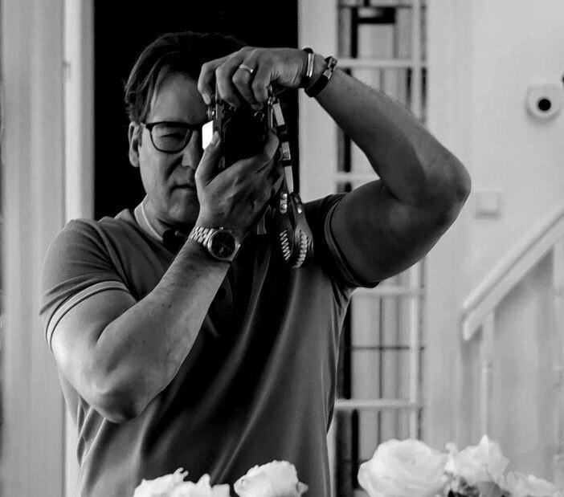
Over Carlo
“Altijd op zoek naar het maken van de perfecte foto. En onderweg, de lat steeds een stukje hoger leggen.”
Als fotograaf zie ik de wereld door een creatieve lens. Mijn stijl? Nostalgisch, filmisch, tijdloos, romantisch, avontuurlijk en ongedwongen. Ach, misschien ook nog een vleugje artistiek.
Ik wil jullie graag écht leren kennen en samen ontdekken hoe jullie trouwdag eruit zal zien. Zo merken we vanzelf of het klikt.
13 jaarin bedrijf als fotograaf
Documentairongeposeerd en oprecht
Second shooterbruid en bruidegom tegelijk in beeld
Fotoboekbij elk trouwpakket inbegrepen
Contact opnemen
Vertel iets over jullie plannen. Ik neem zo snel mogelijk contact met jullie op.
Liever even bellen of appen?
Kennismaken doe ik het liefst in een persoonlijk gesprek, op locatie.
Made, Noord-Brabant